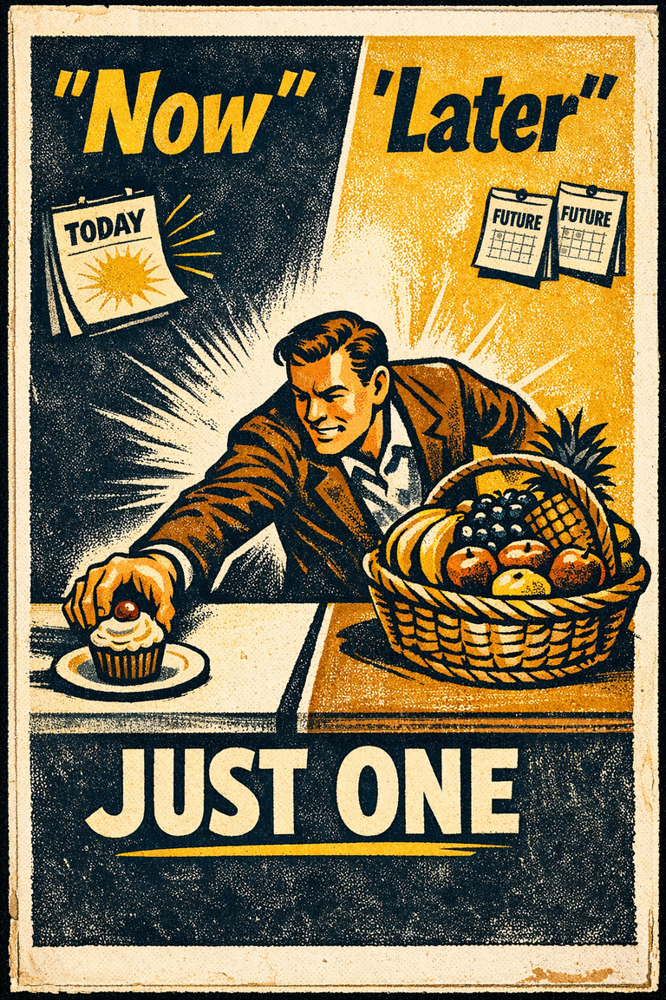
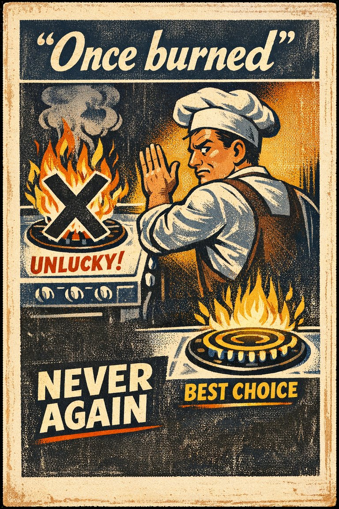
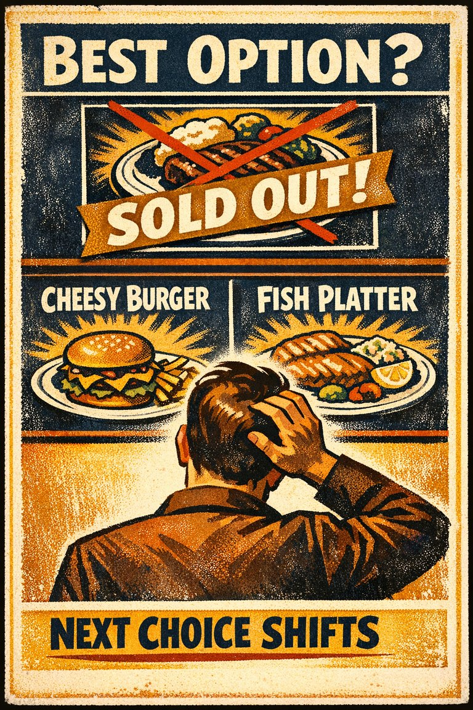
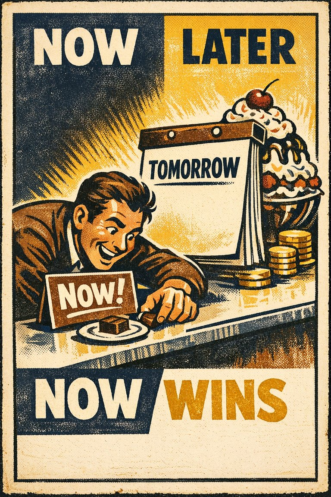
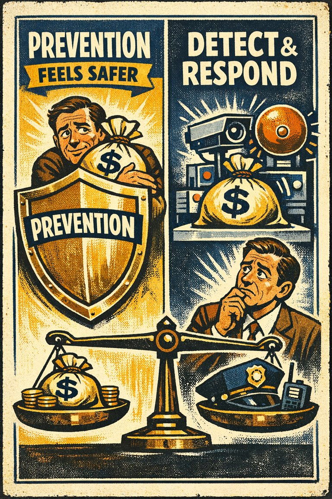
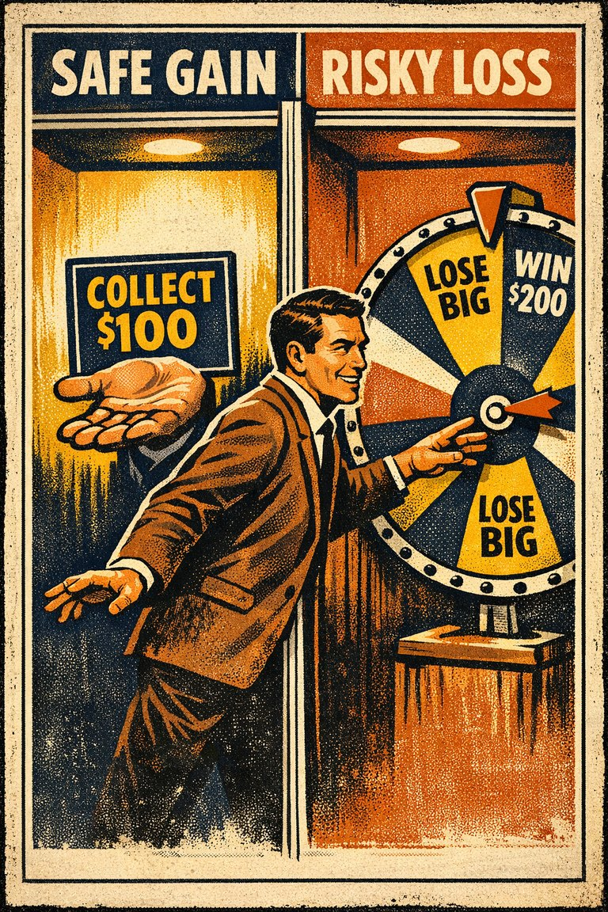
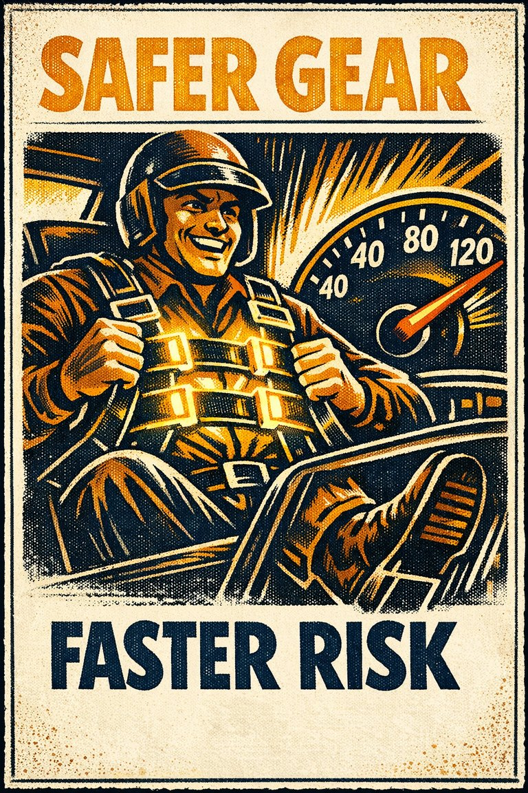
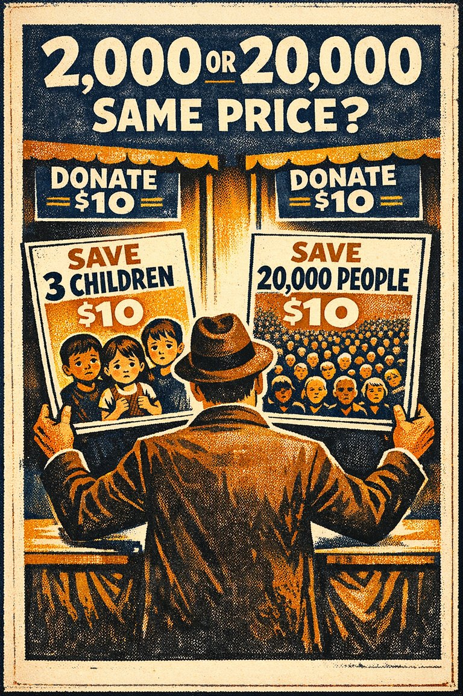
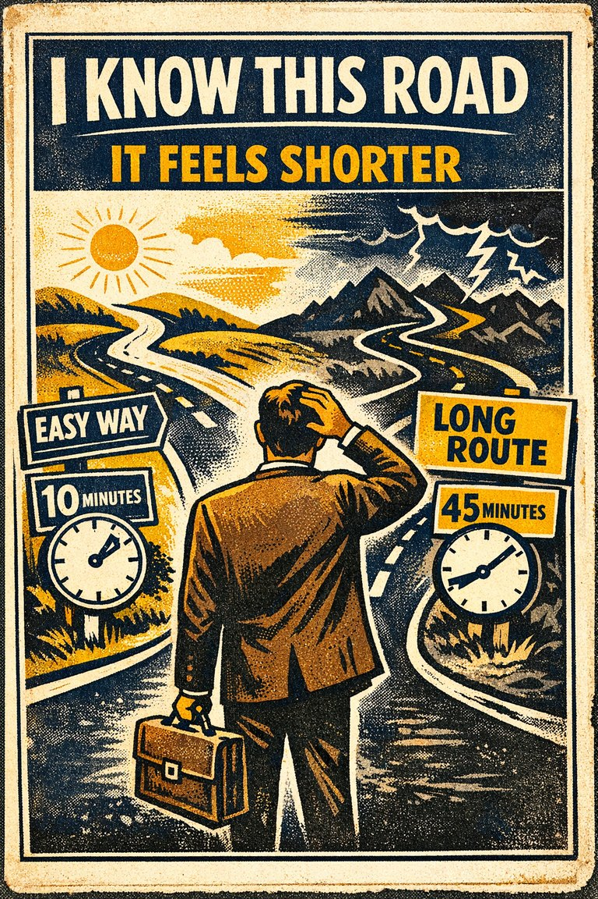

Action bias
The tendency for someone to act when faced with a problem even when inaction would be more effective, or to act when no evident problem exists.
DecisionBaseline

Cognitive Biases
A practical cognitive-bias site with clear definitions, learning paths, assessments, self-audits, and debiasing tools.
Category
These biases bend choice, commitment, action, avoidance, and preference under uncertainty.
Use these side by side before deciding which label best fits the judgment failure you are seeing.
The tendency for someone to act when faced with a problem even when inaction would be more effective, or to act when no evident problem exists.

The tendency to solve problems through addition, even when subtraction is a better approach.

The tendency to avoid options when their probabilities are unclear, even if the unclear option may not actually be worse than the familiar one.

The tendency to give excess weight to the opinion of a high-status or authoritative source independent of whether the source has earned that weight on the specific issue.

The tendency to depend excessively on automated systems which can lead to erroneous automated information overriding correct decisions.

The tendency for candidates listed first on a ballot to gain a small voting advantage.

The tendency for people to appear more attractive in a group than in isolation.

The tendency to behave more compassionately towards a small number of identifiable victims than to a large number of anonymous ones.

The tendency for an option to seem better when it appears as a middle compromise.

The tendency for a dominated third option to shift preference toward a nearby target option.

The tendency to favor the preselected or default option simply because it is already positioned as the path of least resistance.

The tendency to spend more money when it is denominated in small amounts rather than large amounts.

The tendency to sell an asset that has accumulated in value and resist selling an asset that has declined in value.

The tendency to view two options as more dissimilar when evaluating them simultaneously than when evaluating them separately.

The tendency to resist restarting or retracing steps even when doing so would save time or effort.

Just as losses yield double the emotional impact of gains, dread yields double the emotional impact of savouring.

The tendency to attribute greater value to an outcome if they had to put effort into achieving it.

The tendency to value something more highly once it is already owned, possessed, or treated as part of the current arrangement.

The tendency for the same underlying information to produce different judgments depending on how the options or outcomes are described.

A tendency limiting a person to using an object only in the way it is traditionally used.

The tendency to prefer smaller immediate rewards over larger later ones, even against one's longer-term interests.

An over-reliance on a familiar tool or methods, ignoring or under-valuing alternative approaches.

The tendency to prefer a smaller set to a larger set judged separately, but not jointly.

The tendency for losses or giving something up to feel worse than equivalent gains feel good.

The tendency to like, trust, or feel more comfortable with something simply because it has become familiar.

The tendency to concentrate on the nominal value of money rather than its value in terms of purchasing power.

The tendency to ignore or drastically underuse probability information when making decisions under uncertainty.

The tendency to avoid a previously optimal choice after a bad outcome, even when the situation is unchanged.

The tendency to assume that things will keep functioning more or less normally, which leads people to underprepare for unprecedented or fast-moving disruption.

An aversion to contact with or use of products, research, standards, or knowledge developed outside a group.

The tendency for unavailable but mentally present options to influence current choices.

Failure to recognize that the original plan of action is no longer appropriate for a changing situation or for a situation that is different from anticipated.

The tendency to give disproportionate weight to immediate costs and payoffs relative to later ones, even when the later consequences are larger.

The tendency to overvalue prevention spending relative to equally effective detection or response.

The tendency to overestimate how much your future preferences, values, and reactions will resemble whatever you feel strongly right now.

The tendency to make risk-averse choices if the expected outcome is good but risk-seeking choices if it is bad.

The tendency to push back against a perceived attempt to limit one's freedom of choice, sometimes by moving toward the very option one was being steered away from.

Devaluing proposals only because they purportedly originated with an adversary.

The tendency to take greater risks when perceived safety increases.

The tendency to respond weakly to scale, treating small and large harms or benefits as if the difference barely matters.

The tendency to reject new evidence that contradicts a paradigm.

The tendency for groups to spend too much time discussing shared information and too little on unique information.

The tendency when making decisions, to favour potential candidates who do not compete with one's own particular strengths.

The tendency to prefer the current option, default, or inherited arrangement simply because it is the current option, default, or inherited arrangement.

The tendency to keep investing in a losing path because of what has already been spent, even when the forward-looking case has weakened.

The tendency to underestimate the duration taken to traverse oft-travelled routes and overestimate the duration taken to traverse less familiar routes.

The preference for reducing a small risk to zero over a greater reduction in a larger risk.